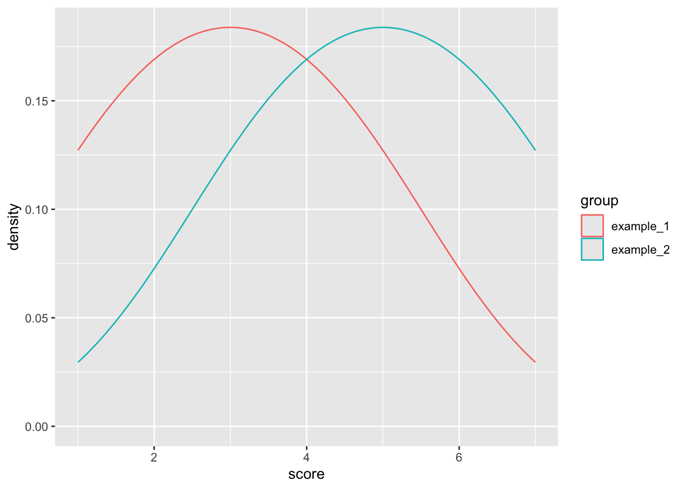
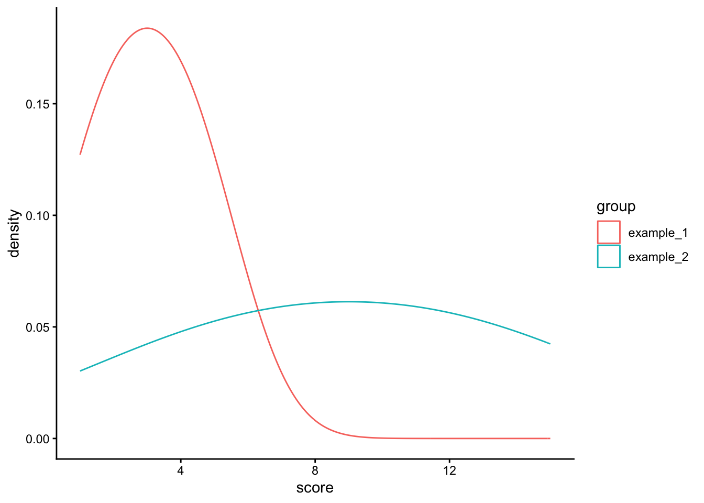

# random sample of 10 scores from 1-10
x <- sample(1:10, 10)9 Variability
NEED RAFALIB PACKAGE
9.1 Variability
A quantitative measure of difference between a set of scores that describes how scores are scattered around a central point.
Descriptive Variability
Assesses spread or clustering of scores.
Inferential Variability
Assesses how accurately one individual score/sample represents the population.
Used to detect patterns, variability influences how easily those patterns are detected.
Variability can be small or large.
Small indicates that scores are very clustered together.
Large indicates that scores are widely dispersed.
9.2 Measures of Variability
9.2.1 Range
Total distance covered by the distribution, from highest to lowest value, also gives information about how many categories there are.
Relies on two values (extremes), ignores all others
Range = Maximum Score – Minimum Score
9.2.1.1 Calculate in R
Let’s use R to work out an example. First, use the sample function to create 10 scores from 1:10 and assign that list of numbers (called a vector) to the object ‘x’.
The range function will produce the two values we use to calculate the range, the highest and lowest.
# gives us the extreme values
range(x)The max and min function will give us the largest and smallest numbers respectively.
# gives us the maximum value
max(x)
# gives us the minimum value
min(x)Now we can use these functions to calculate the range.
max(x) - min(x)9.2.2 Variance & Standard Deviation
Calculated using all scores in a distribution
Most commonly used measure of variability
Describes average distance between a score and the mean
Used with interval and ratio scales
variance definition of variance
standard deviation definition of standard deviation
9.2.2.1 Calculate by hand
Calculate the mean.
Subtract the mean from each individual score to get a difference score for each participant. Make sure that if you add all of the difference scores they equal zero.
Square the difference scores to get squared scores.
Add all of the squared scores to get the Sum of Squared Deviations (SS).
Divide the SS by the size of your population (N) or sample (n-1) to get the variance (σ2 or s2).
Find the square root of σ2 to find the standard deviation(σ or s).
9.2.2.2 Calculate in R (long)
Start with a simple vector we will store in the object ‘y’.
# data
y <- c( 1, 2, 3, 4, 5)- Calculate the mean.
mean(y)[1] 3- Subtract the mean from each individual score to get a difference score for each participant. Make sure that if you add all of the difference scores they equal zero.
diff_score <- y - mean(y)- Square the difference scores to get squared scores.
sq_score <- diff_score^2- Add all of the squared scores to get the Sum of Squared Deviations (SS).
SS <- sum(sq_score)- Divide the SS by the size of your population (N) or sample (n-1) to get the variance (σ^2 or s^2).
# variance for a population
pop_var <- SS/length(y)
pop_var[1] 2# variance for a sample
sample_var <- SS/(length(y) - 1)
sample_var[1] 2.5- Find the square root of σ2 to find the standard deviation(σ or s).
# population standard deviation
sqrt(pop_var)[1] 1.414214# sample standard deviation
sqrt(sample_var)[1] 1.5811399.2.2.3 Calculate in R (short)
Start with the same data
# data
y <- c( 1, 2, 3, 4, 5)- Calculate variance. For the calculation of population variance and standard deviation we can use the
rafalibpackage. For populations we will use thepopvarfunction and for sample vaiance we will use thevarfunction from base R.
# population variance
library(rafalib)
popvar(y)[1] 2# sample variance
var(y)[1] 2.5- Calculate standard deviation
# population stabdard deviation
popsd(y)[1] 1.414214# sample sd
sd(y)[1] 1.5811399.3 Population v Sample
Population is EVERYONE.
Variance (σ2) = SS/N
Standard Deviation (σ) = √(SS/N)
Sample is a subset of everyone.
Variance (s2) = SS/n-1.
Standard Deviation (s) = √(SS/(n-1)).
We use a different formula for samples because we are using limited information from a small group (the sample) to draw inferences about a larger group (the population).
Samples have less variability than populations, so statistics we run on them must be adjusted to account for this.
9.4 Biased and Unbiased Statistics
Biased Statistics
The average value calculated for a sample overestimates or underestimates the population parameter
i.e. the sample before adjustment (n-1)
Unbiased Statistics
The average value is equal to the population parameter.
i.e. the sample after adjustment (n-1).
9.5 Transforming Data Sets
9.5.1 Adding a constant
When you add a value to every score in the data set it does not change the standard deviation. Try it out calculate the sample standard deviation of the example_1.
example_1 <- c(1, 2, 3, 4, 5)
s <- sd(example_1)
s[1] 1.581139Now, let’s add a constant value of 2 to every score.
example_2 <- example_1 + 2
example_2[1] 3 4 5 6 7Let’s see if the sample standard deviation changed.
s <- sd(example_2)There is no difference because the distance between scores is unchanged. The shape of the distribution is the same, just shifted to the right.

9.5.2 Multiplying by a constant
Multiplying every score in the data set by a constant changes standard deviation. Try it out. Calculate the sample standard deviation of example_1.
example_1 <- c(1, 2, 3, 4, 5)
s <- sd(example_1)
s[1] 1.581139Now, let’s multiply every score by a constant of 3.
example_2 <- example_1 * 3
example_2[1] 3 6 9 12 15Let’s see if the sample standard deviation has changed.
s <- sd(example_2)
s[1] 4.743416There distributions now look very different. The distance between scores in example_2 has changed by a multiple of 3. The distance between scores is now greater, resulting in a wider distribution.
